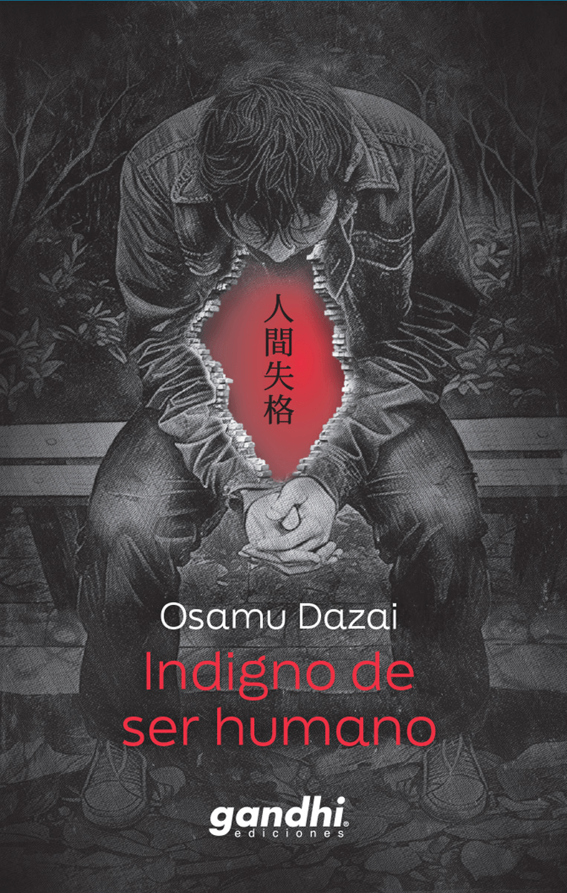
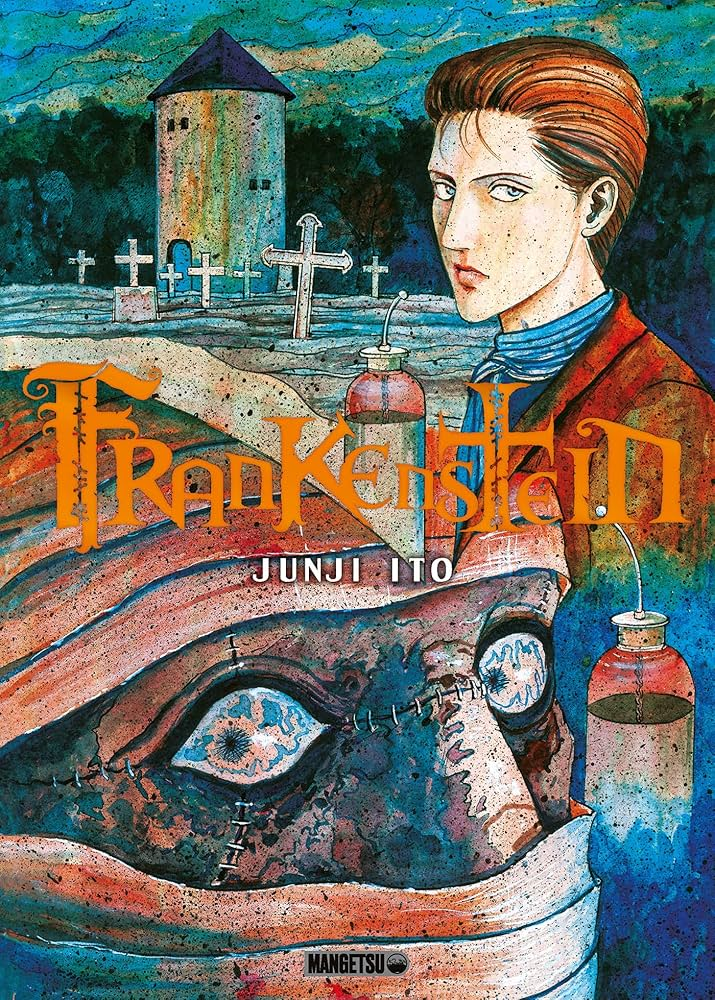
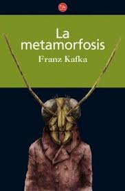
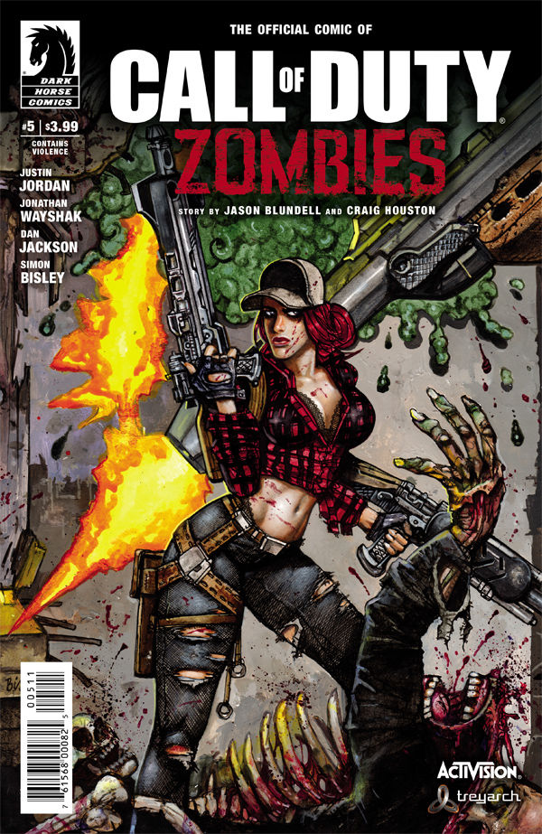
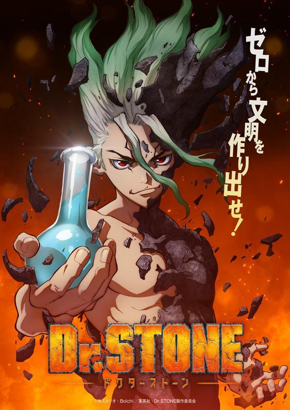
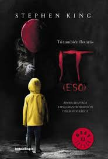
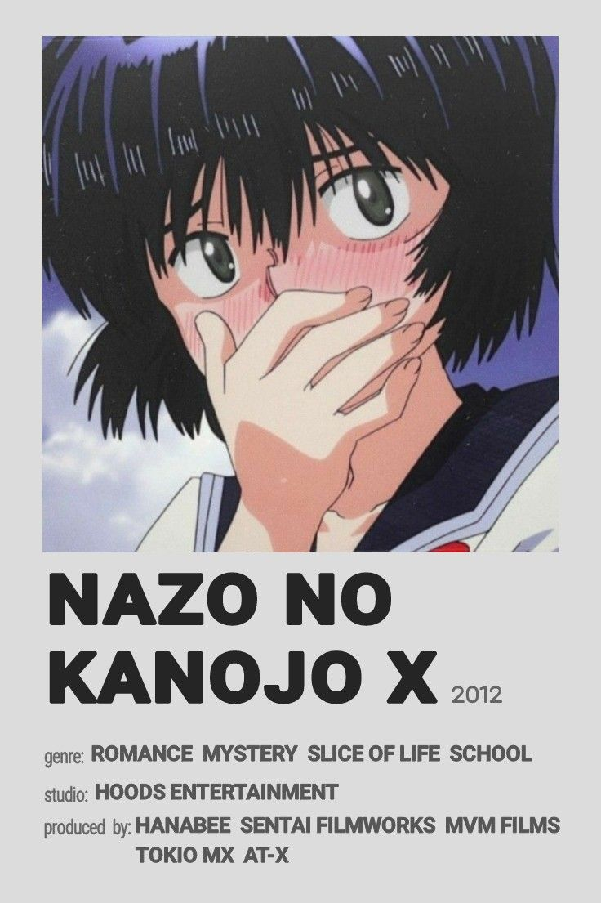

EL REINO DE LAS PAGINAS</CENTER>
EL REINO DE LAS PAGINAS
YO, EL ERRANTE DE LOS LIBROS, PROVENGO DEL REINO DE LAS PÁGINAS, UN ORBE DONDE LA SABIDURÍA SE MIDE EN TOMOS DEVORADOS CADA SEMANA. MAS, EL DÍA DE HOY, HE RECIBIDO LA ENCOMIENDA DE RECOMENDAROS LOS VOLÚMENES QUE HEMOS LEÍDO, SIN ORDEN ESPECÍFICO. AL FINAL DE ESTE ENCUENTRO, PODRÉIS ELEGIR EL QUE MÁS OS PLAZCA, PARA QUE LO LEÁIS.
TANTO SI SOIS UN ALMA QUE JAMÁS HA ABIERTO UN LIBRO COMO SI YA LO HABÉIS HECHO, HE DE DECIROS QUE AQUÍ ENCONTRARÉIS UNA GRAN VARIEDAD.
ESPERO QUE MI OFRECIMIENTO SEA DE VUESTRO AGRADO. AHORA, ID. ELEGID UN CAMINO."
INDIGNO DE SER HUMANO
"ESTE VOLUMEN, DE OSAMU DAZAI, NO TRATA DE ESPADAS, SINO DE LA DEBILIDAD DEL ALMA.
INDIGNO DE SER HUMANO ES EL MELANCÓLICO TESTIMONIO DE YOZO OBA, UN HOMBRE PERPETUAMENTE AJENO AL MUNDO. INCAPAZ DE COMPRENDER LA MORALIDAD HUMANA, OCULTA SU PÁNICO TRAS LA MÁSCARA DE UN BUFÓN. SU VIDA ES UN DESCENSO A LA DEGRADACIÓN, SUMERGIDO EN VICIOS Y RELACIONES DESTRUCTIVAS.
EL LIBRO, A TRAVÉS DE SUS TRES NOTAS, ES EL CRUDO RETRATO DE LA AUTODESTRUCCIÓN Y LA SOLEDAD ABSOLUTA, CONCLUYENDO QUE LA VIDA ES UN TORMENTO. NO HALLARÉIS ESPERANZA AQUÍ, SOLO EL AMARGO SABOR DE LA ALIENACIÓN Y UN ESPEJO SOMBRÍO DE LA CONDICIÓN HUMANA."

FRANKENTEIN DE JUNJI ITO
"PRESENCIAD LA ARROGANCIA. VICTOR FRANKENSTEIN CREA VIDA A PARTIR DE CADÁVERES. HORRORIZADO POR SU ABOMINACIÓN, LA ABANDONA.
LA CRIATURA, INTELIGENTE Y SOLA, ES RECHAZADA POR EL MUNDO. EL ODIO LA CONSUME. BUSCA VENGANZA. PERSIGUE A SU CREADOR, EXIGIENDO UN ALMA GEMELA O PROMETIENDO MISERIA ETERNA.
ES LA HISTORIA DEL CREADOR QUE RENIEGA DE SU OBRA; LA PRUEBA DE QUE EL PEOR MONSTRUO ES EL HOMBRE QUE ENGENDRA LA BESTIA Y HUYE."

LA METAMORFOSIS DE KAFKA
"OBSERVAD LA INSIGNIFICANCIA DEL HOMBRE Y LA FRAGILIDAD DE SU DIGNIDAD. GREGOR SAMSA, UN VIAJANTE DE COMERCIO, DESPIERTA UNA MAÑANA TRANSFORMADO EN UN MONSTRUOSO INSECTO. SU VIDA ENTERA SE DESMORONA NO POR SU NUEVA FORMA, SINO POR EL RECHAZO. SU FAMILIA, ANTAÑO DEPENDIENTE DE ÉL, COMIENZA A REPUDIARLO. PASA DE SER EL SUSTENTO DEL HOGAR A UN PARIA, UNA CARGA VERGONZOSA CONFINADA A UNA HABITACIÓN.
LA OBRA DE KAFKA ES UN ESTUDIO SOMBRÍO DE LA ALIENACIÓN. MUESTRA LA INDIFERENCIA Y LA CRUELDAD DE LA SOCIEDAD ANTE LO DIFERENTE. LA LUCHA DE SAMSA ES CONTRA EL RECHAZO DE AQUELLOS QUE LE DEBÍAN LEALTAD. SU MUERTE FINAL, SOLITARIA, ES UN ACTO DE LIBERACIÓN PARA LOS SUYOS, DEMOSTRANDO CUÁN EFÍMERO ES EL VALOR HUMANO CUANDO LA UTILIDAD DESAPARECE."

CALL OF DUTY BLACK OPS ZOMBIES
"ESTE CÓMIC SIGUE A LA TRIPULACIÓN 'VICTIS' —CUATRO ALMAS PERDIDAS— MIENTRAS NAVEGAN UN APOCALIPSIS ZOMBI. GUIADOS POR LA VOZ DEL DR. RICHTOFEN, BUSCAN LA 'LLAVE DE INVOCACIÓN'. VIAJAN ENTRE DIMENSIONES DEVASTADAS, ENFRENTÁNDOSE A HORDAS Y VERSIONES ZOMBIFICADAS DE SÍ MISMOS. SU LUCHA ES POR LA SUPERVIVENCIA Y POR ROMPER UN CICLO INTERMINABLE DE VIDA, MUERTE Y RESURRECCIÓN, UN JUEGO DE TÍTERES EN UN MULTIVERSO FRACTURADO."

DR STONE
"TODA LA HUMANIDAD PETRIFICADA. TRES MIL SETECIENTOS AÑOS DESPUÉS, EL GENIO SENKU ISHIGAMI DESPIERTA. SU ÚNICA ARMA ES LA CIENCIA; SU MISIÓN, REVIVIR A TODOS Y RESTAURAR LA CIVILIZACIÓN.
SE ENFRENTA A TSUKASA, QUE BUSCA UNA UTOPÍA BASADA EN LA FUERZA BRUTA. LA GUERRA ESTALLA. NO DE ESPADAS, SINO DE INGENIO Y CONOCIMIENTO, LUCHANDO POR EL ALMA MISMA DEL FUTURO DE LA HUMANIDAD."

IT (ESO)
"EN DERRY, UN ANTIGUO MAL LLAMADO 'ESO' DESPIERTA CADA 27 AÑOS, ALIMENTÁNDOSE DEL MIEDO DE LOS NIÑOS, A MENUDO COMO UN PAYASO. UN GRUPO DE INADAPTADOS, EL 'CLUB DE LOS PERDEDORES', SE ENFRENTA A ÉL EN SU INFANCIA. AÑOS DESPUÉS, REGRESAN COMO ADULTOS, FORZADOS A RECORDAR Y A ENFRENTAR AL DEMONIO UNA ÚLTIMA VEZ, EN UNA BATALLA FINAL CONTRA EL MIEDO Y LA MEMORIA."

NAZO NO KANOJO X
"AKIRA TSUBAKI, UN JOVEN DE INSTITUTO, SE ENCUENTRA EXTRAÑAMENTE UNIDO A LA ENIGMÁTICA ESTUDIANTE TRANSFERIDA, MIKOTO URABE, A TRAVÉS DE UN VÍNCULO INUSUAL. ESTA CONEXIÓN PECULIAR SE CONVIERTE EN UNA PARTE FUNDAMENTAL DE SU RELACIÓN DIARIA, SIENDO, SEGÚN VUESTRO CRITERIO, EL PRIMER VOLUMEN QUE HABÉIS DEVORADO Y VUESTRO FAVORITO ENTRE TODOS.
LO QUE COMIENZA COMO UNA RAREZA SE TRANSFORMA EN UN ROMANCE POCO CONVENCIONAL, DONDE ESTA EXTRAÑA CONEXIÓN SE CONVIERTE EN EL MEDIO PRINCIPAL PARA COMUNICAR SUS SENTIMIENTOS Y PROFUNDIZAR SU VÍNCULO, EXPLORANDO LOS LÍMITES EXTRAÑOS DE LA INTIMIDAD HUMANA."

ATENDED BIEN A MIS PALABRAS: VUESTRO SANTUARIO DE PERGAMINOS, VUESTRA PÁGINA, SE ACTUALIZARÁ PUNTUALMENTE. CADA SEMANA, SIN FALTA, SE AÑADIRÁN NUEVOS VOLÚMENES A ESTA COLECCIÓN.
ESPERO QUE VUESTRA SED DE SABER SEA TAN AFILADA COMO MI ESPADA. NO HAY EXCUSA PARA LA IGNORANCIA SI EL CONOCIMIENTO SE OS OFRECE CON TAL REGULARIDAD. VOLVED, Y LEED.
"SI OS SENTÍS COMPELIDOS A EXPRESAR VUESTRAS IMPRESIONES, OPINIONES, O INCLUSO VUESTRAS QUEJAS Y SUGERENCIAS, ESTE ES EL LUGAR. NO SOY DE ESCUCHAR EL PARLOTEO OCIOSO, PERO SI VUESTRAS PALABRAS TIENEN SUSTANCIA O, AL MENOS, LA FUERZA DE LA CONVICCIÓN, ADELANTE.
DEJAD VUESTRAS IMPRESIONES, QUEJAS U OBSERVACIONES EN ESTE APARTADO. ES VUESTRO ESPACIO. USADLO CON JUICIO."